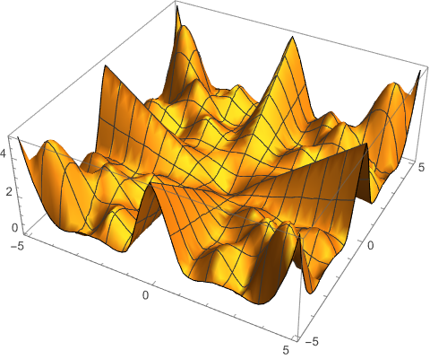
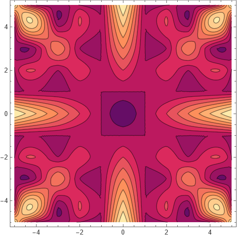
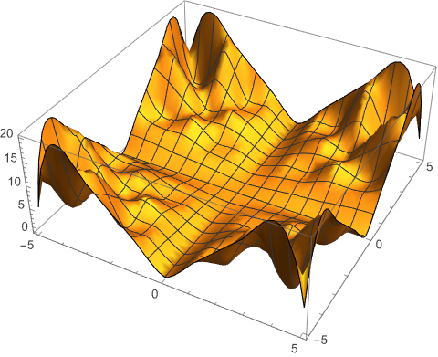
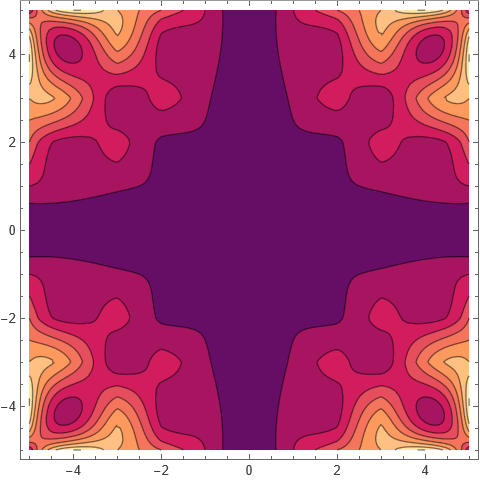
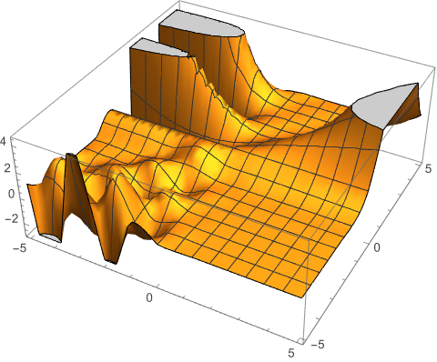
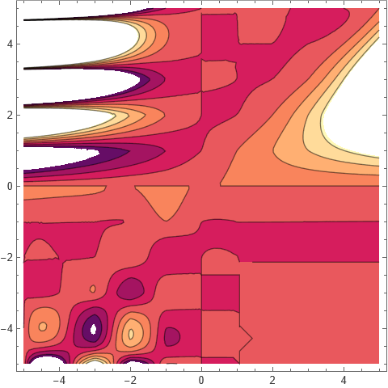
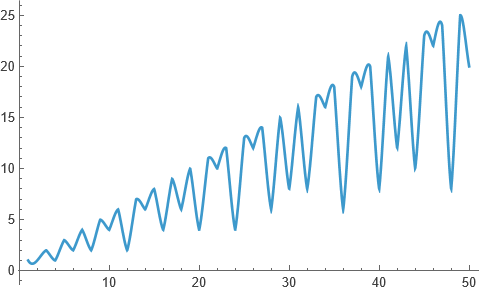

Interpolation
26 October, 2025
Interpolation is a fundamental technique in
mathematics and data analysis used to estimate values between known data
points. Interpolation constructs a function that passes through (or
closely approximates) given data points, allowing predictions at
intermediate values. There are many methods of interpolation, from
simple linear approaches to higher-order polynomials and splines, each
balancing accuracy and smoothness. Mathematica has an in-built command
Interpolation which does the job. In the help section of
this command is an example showing how GCD function can also be
interpolated; extended to real values too. I share that in this
blog.
For GCD function:—


Similarly the LCM function:—


Binomial(n, k) function returns the binomial coefficient $$\binom{n}{k} = \frac{n!}{k!(n-k)!}$$


Finally a one variable function: euler phi function.

Thanks for reading. Return to see all blog posts, or to the home page.